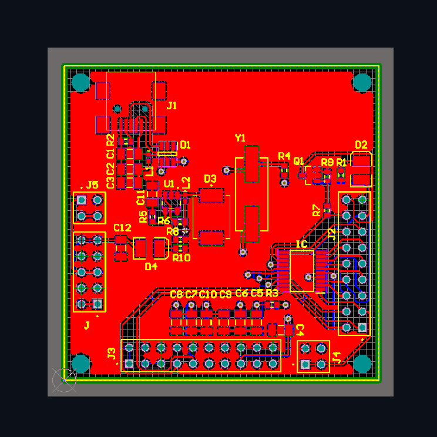
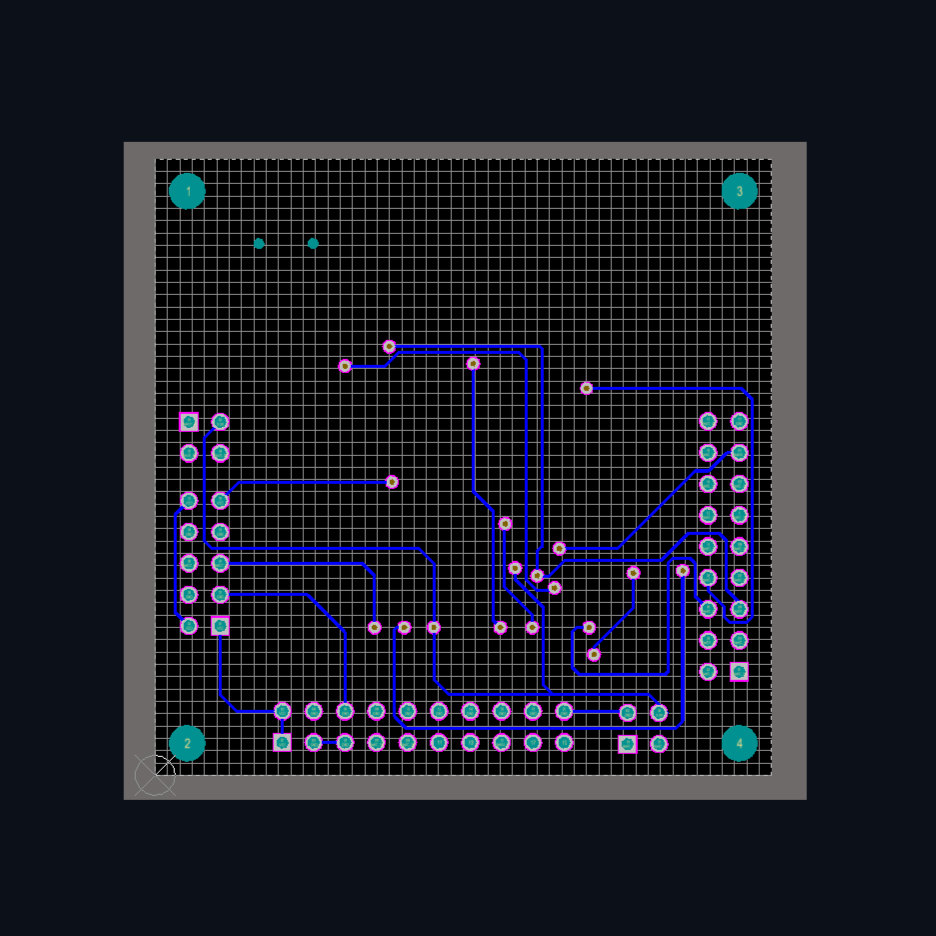
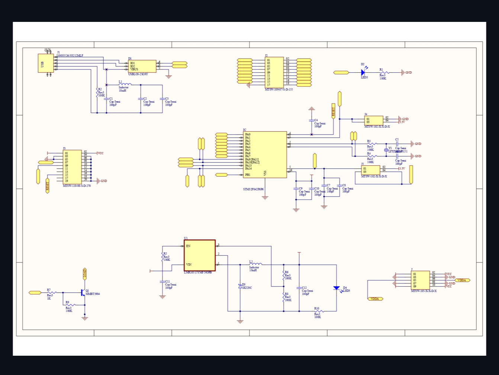
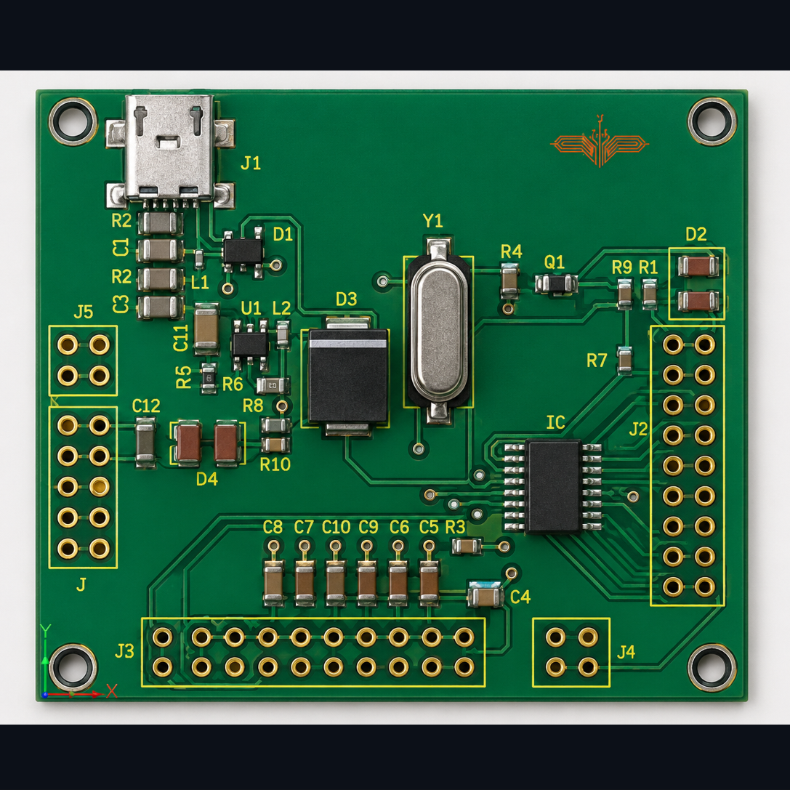
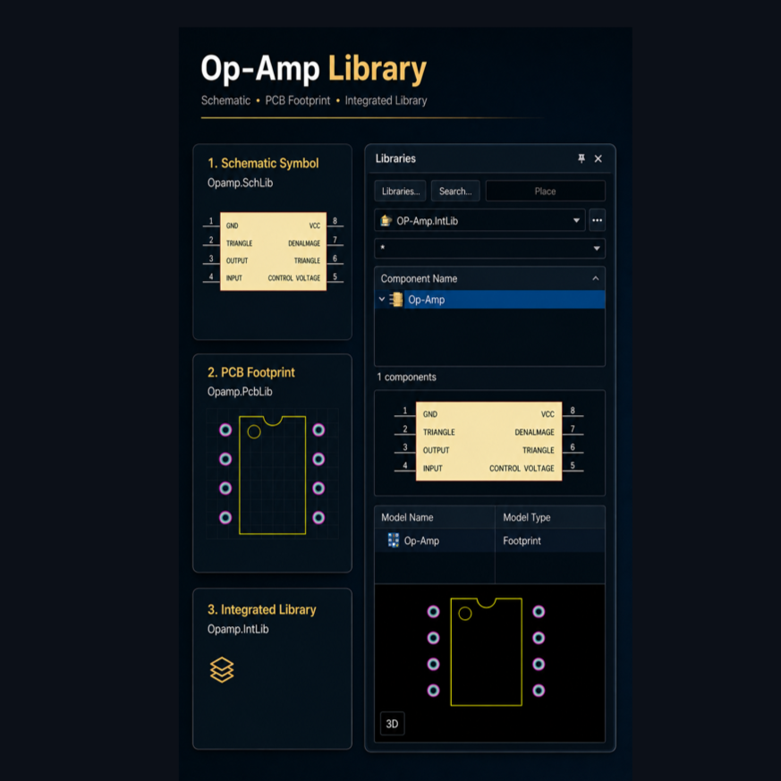
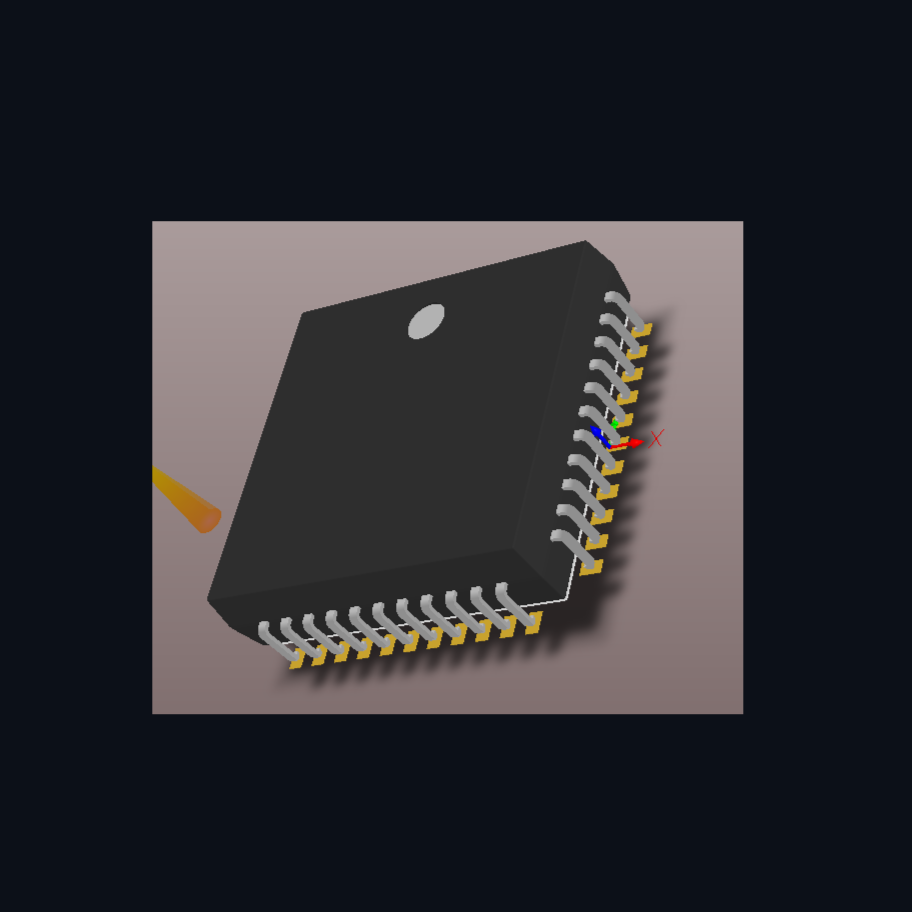
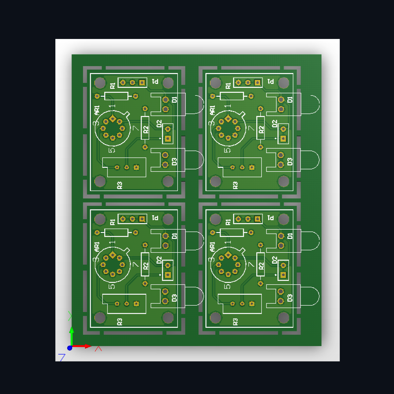
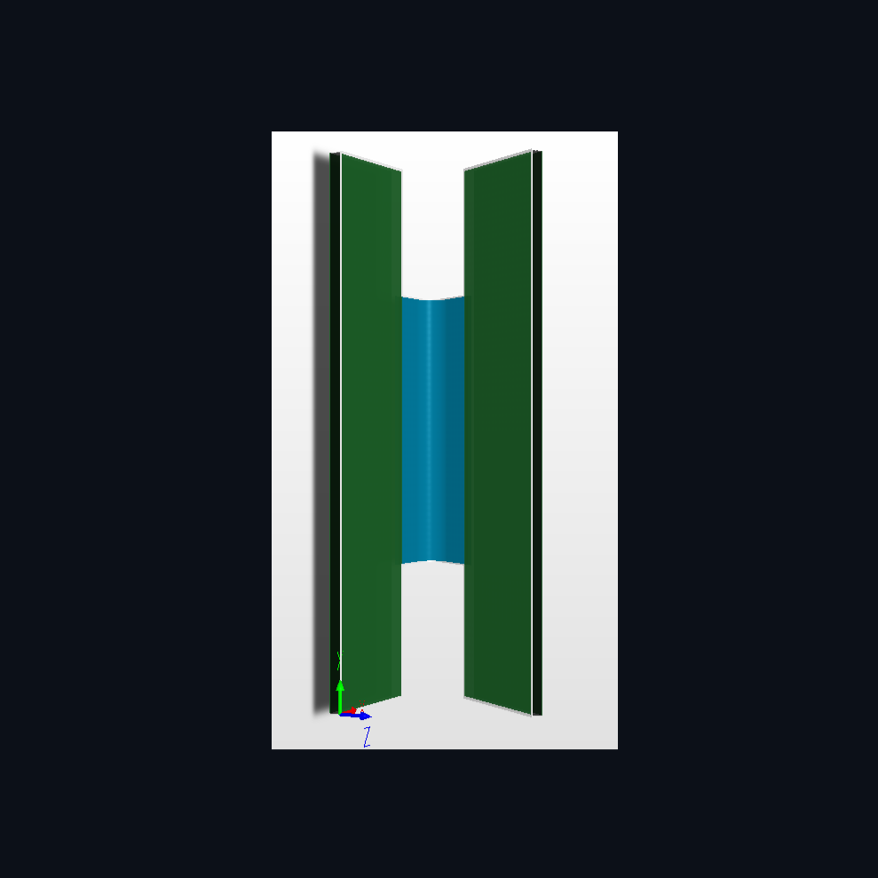
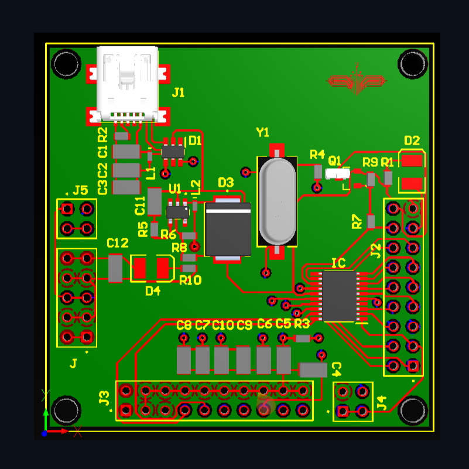

About Me
I am an embedded systems and PCB design enthusiast specializing in professional PCB development using Altium Designer. My focus areas include STM32 microcontrollers, USB hardware design, 4-layer PCB layout, embedded firmware, signal integrity, power electronics, and high-speed routing.
Featured Project — STM32 USB-C 4-Layer Development Board
Project Overview
Designed a professional STM32-based USB-C development board using a 4-layer PCB stackup. The project demonstrates embedded hardware design, USB routing, power integrity, and modern PCB layout practices.
Main Features
- STM32 Microcontroller
- USB-C Interface
- 4-Layer PCB
- OLED Display Support
- SWD Debug Interface
- UART/I2C/SPI Headers
- Status LEDs
- ESD Protection
Engineering Focus
- USB DiAerential Routing
- Signal Integrity
- Ground Plane Optimization
- Power Distribution
- EMI Reduction
- Embedded Hardware Design
Technical Skills
PCB Design
Altium Designer, 4-Layer PCB Layout, DiAerential Pair Routing, DRC, Gerber Generation, Ground Plane Design.
Embedded Systems
STM32, ESP32, UART, SPI, I2C, USB, SWD Debugging, Embedded Firmware Development.
Hardware Engineering
Power Supply Design, Signal Integrity, RF Layout, USB-C Design, ESD Protection, Sensor Interfaces.
4-Layer PCB Design Details
| Specification | Details |
|---|---|
| Microcontroller | STM32 Series MCU |
| PCB Stackup | 4-Layer |
| USB Interface | USB Type-C |
| Routing Type | DiAerential Pair USB Routing |
| Grounding | Dedicated Ground Plane |
| Applications | Embedded Systems / USB Devices |
Design Workflow
1. Schematic Design
Designed complete schematic architecture using Altium Designer.
2. PCB Layout
Implemented professional 4-layer routing with USB diAerential pairs and ground planes.
3. Manufacturing
Generated Gerber files, BOM, and fabrication-ready outputs.
Tools & Technologies
PCB Software
Altium Designer, KiCad
Firmware Tools
STM32CubeIDE, Arduino IDE
Manufacturing
JLCPCB, PCBWay
Contact Information
Name: Sachin Anli Lakhe
Phone No: 9834113408
Email: sachinlakhe840@gmail.com
Specialization: PCB Design, Embedded Systems, STM32 Hardware Development
PCB Design Showcase
4-Layer PCB Top View
Add your Altium Designer top-layer PCB screenshot here.

Bottom Layer Routing
Showcase routing quality, power traces, and ground plane implementation.

3D PCB Render
Add a realistic 3D PCB render exported from Altium Designer.

Project Images & Screenshots
Schematic Design
Add your STM32 USB schematic screenshot exported from Altium Designer.

Manufactured PCB
Add real manufactured PCB photos for portfolio presentation.

Library Creation
Experienced in creating custom schematic symbols, PCB footprints, integrated libraries, and component parameter management in Altium Designer.

3D Body Design
Skilled in generating realistic 3D PCB models, STEP integration, enclosure verification, and mechanical clearance validation.

PCB Panelization
Knowledge of manufacturing panelization techniques including breakaway tabs, V cuts, tooling holes, fiducials, and assembly optimization.

Rigid-Flex PCB Design
Understanding of rigid-flex PCB stackups, bend regions, flex routing constraints, and advanced PCB fabrication techniques.

Logo Printing
Experienced in PCB branding, silkscreen optimization, logo placement, version labeling, and manufacturing-ready documentation.
